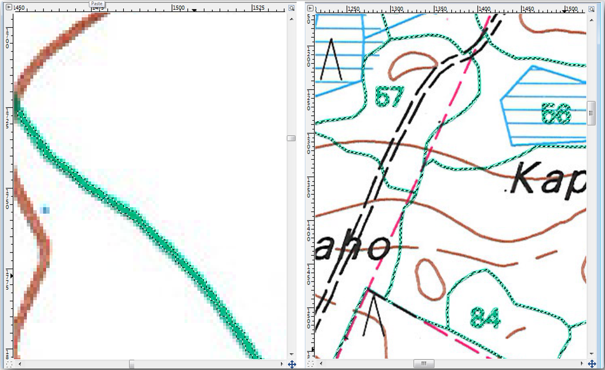
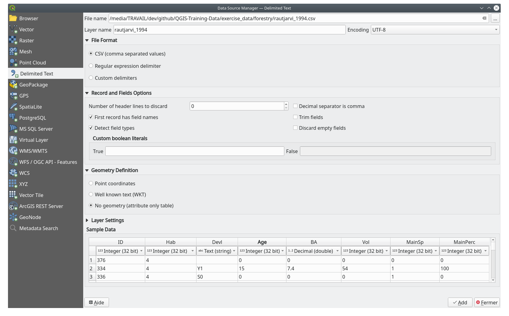

14.3. သင်ခန်းစာ - သစ်တောပင်ထောင်များ Digitize ပြုလုပ်ခြင်း (Lesson: Digitizing Forest Stands)
Georeference ပြုလုပ်ထားသော မြေပုံကို ရိုးရိုးနောက်ခံ image တစ်ခုအနေဖြင့် အသုံးမပြုပါက နောက်တစ်ဆင့်လုပ်ရမည်မှာ ထိုမြေပုံမှ element များကို digitize ပြုလုပ်ရန်ဖြစ်သည်။ Vector data များဖန်တီးခြင်းအကြောင်းလေ့ကျင့်ခန်းများကို သင်ခန်းစာ- Vector Dataset အသစ်တစ်ခုဖန်တီးခြင်း (Lesson: Creating a New Vector Dataset) ထဲတွင် လုပ်ဆောင်ခဲ့ပြီးဖြစ်ပါသည်။ ယခုသင်ခန်းစာထဲတွင် မြေပုံထဲ၌ အစိမ်းရောင်မျဉ်းများဖြင့် ပေါ်နေသော သစ်တောပင်ထောင်နယ်နိမိတ်များကို digitize ပြုလုပ်မည်ဖြစ်ပါသည်၊ သို့သော် ထိုသို့လုပ်ရာတွင် ကောင်းကင်ဓာတ်ပုံကိုအသုံးမပြုပဲ georeference ပြုလုပ်ထားသောမြေပုံကို အသုံးပြုပါမည်။
ဤသင်ခန်းစာအတွက် ရည်မှန်းချက်- သစ်တောပင်ထောင်များ digitize ပြုလုပ်ခြင်းနှင့် ၎င်းတို့ထဲသို့ inventory data များထည့်သွင်းခြင်း နည်းစနစ်ကို လေ့လာရန်
14.3.1. ★☆☆ လိုက်လုပ်ကြည့်ပါ - သစ်တောပင်ထောင်နယ်နိမိတ်များ ဆွဲထုတ်ခြင်း (Follow Along: Extracting the Forest Stands Borders)
ယခင်သင်ခန်းစာတွင် သိမ်းဆည်းခဲ့သော map_digitizing.qgs project ကိုဖွင့်ပါ။
မြေပုံကို scan ဖတ်ပြီး georeference ပြုလုပ်ပြီးပါက image ကိုအကိုးအကားအဖြစ်ကြည့်ရှုပြီး တိုက်ရိုက် digitize စတင်ပြုလုပ်နိုင်ပြီဖြစ်ပါသည်။ ထိုနည်းသည် Digitize ပြုလုပ်မည့် image သည် ကောင်းကင်ဓာတ်ပုံတစ်ခုဖြစ်ပါက လုပ်ဆောင်ရမည့်နည်းလမ်းပုံစံမျိုးဖြစ်ပါသည်။
သင် digitize ပြုလုပ်မည့်မြေပုံသည် ယခုလေ့ကျင့်ခန်းတွင်ရှိသကဲ့သို့ မြေပုံကောင်းကောင်းတစ်ခုဖြစ်လျှင် element တစ်ခုချင်းစီအတွက် အချက်အလက်များကို အရောင်အမျိုးမျိုးရှိသော line များဖြင့် ရှင်းလင်းစွာပြသထားခြင်းမျိုး ဖြစ်နိုင်ပါသည်။ အဆိုပါအရောင်များကို GIMP ကဲ့သို့ image processing software အသုံးပြုပြီး သီးခြား image များအဖြစ်သို့ အလွယ်တကူ ဆွဲထုတ်ပေးနိုင်ပါသည်။ ထိုသို့သော သီးခြား image များသည် digitize ပြုလုပ်ရာတွင် အထောက်အကူဖြစ်စေနိုင်ပါသည်၊ အောက်တွင် မြင်တွေ့ရပါလိမ့်မည်။
ပထမဦးဆုံးအဆင့်အနေဖြင့် သစ်တောပင်ထောင်များသာပါရှိသော image တစ်ခုကိုရရှိရန် GIMP ကိုအသုံးပြုရန်ဖြစ်သည်။ ဆိုလိုသည်မှာ မူလ scan ပြုလုပ်ထားသောမြေပုံထဲတွင် မြင်တွေ့ရသော အစိမ်းရောင် line များအားလုံးသာ ပါဝင်ခြင်းဖြစ်သည်-
GIMP ကိုဖွင့်ပါ (Install မပြုလုပ်ရသေးလျှင် အင်တာနက်မှ ဒေါင်းလုဒ်ရယူပါ)
ကိုနှိပ်ပြီး
exercise_data/forestryfolder ထဲမှ မူလ မြေပုံ imagerautjarvi_map.tifကိုဖွင့်ပါ။ သစ်တောပင်ထောင်များကို အစိမ်းရောင် line များဖြင့် ဖော်ပြထားပါသည် (ပင်ထောင်များ၏အရေအတွက်ကိုလည်း polygon တစ်ခုချင်းစီအတွင်း၌ အစိမ်းရောင်ဖြင့်ဖော်ပြထားသည်)
Image ထဲရှိ သစ်တောပင်ထောင်နယ်နိမိတ်များ (အစိမ်းရောင် pixel များ) ဖြစ်သော pixel များကို ရွေးချယ်နိုင်ပြီဖြစ်ပါသည်-
tool ကိုဖွင့်ပါ။
Tool ကို active လုပ်ထားပြီး image ကို zoom ချဲ့ကြည့်ပါ (Ctrl + mouse ဘီးလုံး)၊ forest stand line ဖြစ်သော pixel များကို ခွဲခြားနိုင်သည့်အထိ အနီးကပ် zoom ချဲ့ကြည့်ပါ။ အောက်ဖော်ပြပါ ဘယ်ဘက်ပုံကို ကြည့်ပါ။
Pixel အရောင်တန်ဖိုးအမျိုးမျိုးကို စုစည်းနိုင်စေရန် line ၏အလယ်တွင် mouse cursor ကို click နှိပ်ပြီးဖိဆွဲပါ။
Mouse click ကိုလွှတ်လိုက်ပြီး ခဏစောင့်ပေးပါ။ Tool မှ စုစည်းပေးသော အရောင်များနှင့်ကိုက်ညီသော pixel များကို image တစ်ခုလုံးမှ select လုပ်ပေးပါလိမ့်မည်။
Image တစ်ခုလုံးတွင် select လုပ်ထားသော အစိမ်းရောင် pixel များကို မြင်ရနိုင်ရန် zoom ချုံ့ကြည့်ပါ။
ရလာဒ်ကို ကျေနပ်မှုမရှိပါက ထပ်မံ၍ click နှိပ်ပြီးဖိဆွဲပါ။
Pixel ရွေးချယ်မှုသည် အောက်ဖော်ပြပါ ညာဘက်ပုံအတိုင်း ဖြစ်နေသင့်ပါသည်။
 Selection ပြီးဆုံးသည်နှင့် အဆိုပါ selection ကို layer အသစ်တစ်ခုအဖြစ် ကူးယူထားရန်လိုအပ်ပါသည်၊ ထို့နောက် ၎င်းကို သီးခြား image ဖိုင်အနေဖြင့် သိမ်းဆည်းပါ-
Select ပြုလုပ်ထားသော pixel များကို ကူးယူပါ (Ctrl+C သို့မဟုတ် )။
ထို့နောက် pixel များကို layer အသစ်တစ်ခုအနေဖြင့် တိုက်ရိုက် paste လုပ်ပါ ()။ GIMP သည် paste လုပ်ထားသော pixel များကို layer အသစ်တစ်ခုအနေဖြင့် Layers panel ထဲတွင် ပြသပေးပါလိမ့်မည်။
မူလ image layer ကိုပိတ်ရန် ၎င်း image ဘေးရှိ “မျက်လုံးပုံ” icon ကိုနှိပ်ပါ၊ သို့မှသာ Paste လုပ်ထားသော Layer ကိုသာ မြင်ရနိုင်မည်ဖြစ်သည်-

နောက်ဆုံးတွင် ကိုရွေးချယ်ပါ၊ Select File Type (By Extension) တွင် TIFF image အဖြစ်သတ်မှတ်ပါ၊
digitizingfolder ကိုရွေးချယ်ပြီးrautjarvi_map_green.tifဟုအမည်ပေးပါ။ Compression ကိုမေးမြန်းပါက no compression ကိုရွေးချယ်ပေးပါ။
Image ထဲရှိ အခြားအရာများအတွက်လည်း ထိုနည်းအတွက်လုပ်ဆောင်နိုင်ပါသည်၊ ဥပမာ- လမ်းများကို ကိုယ်စားပြုသော အနက်ရောင်မျဉ်းများကို ဆွဲထုတ်ခြင်း သို့မဟုတ် မြေပြင်ကွန်တိုမျဉ်းများကို ကိုယ်စားပြုသော အညိုရောင်မျဉ်းများကို ဆွဲထုတ်ခြင်း။ သို့သော် ယခုလေ့ကျင့်ခန်းအတွက် forest stand များဖြင့်သာ လုံလောက်ပြီဖြစ်ပါသည်။
14.3.2. ★☆☆ မိမိကိုယ်တိုင်ကြိုးစားကြည့်ပါ - အစိမ်းရောင် Pixels Image ကို Georeference ပြုလုပ်ခြင်း (Try Yourself: Georeference the Green Pixels Image)
ယခင်သင်ခန်းစာတွင် ပြုလုပ်ခဲ့သည့်အတိုင်း ဤ image အသစ်ကို ကျန်ရှိသောအခြား data များနှင့်အလုပ်လုပ်ဆောင်နိုင်စေရန်အတွက် georeference ပြုလုပ်ပေးရန်လိုအပ်ပါသည်။
မှတ်သားထားရမည်မှာ ground control point (မြေပြင်ထိန်းချုပ်မှတ်) များ ထပ်မံ၍ digitize ပြုလုပ်ရန်မလိုအပ်တော့ပါ၊ အဘယ့်ကြောင့်ဆိုသော် အဆိုပါ image သည် မူလမြေပုံ image နှင့်အတူတူပင်ဖြစ်သောကြောင့်ဖြစ်သည်။ မမေ့ရမည့် အချို့အချက်များမှာ-
ဤ image သည်လည်း
KKJ / Finland zone 2CRS တွင်ရှိပါသည်။သင်သိမ်းဆည်းထားခဲ့သော ground control point များကို မှတဆင့်အသုံးပြုနိုင်ပါသည်။
Transformation settings ကို ကြည့်ရှုရန် မမေ့ပါနှင့်။
Output raster ကို
digitizingfolder ထဲတွင်rautjarvi_green_georef.tifဟုအမည်ပေးပါ။
Raster အသစ်သည် မူလမြေပုံနှင့် ကောင်းမွန်စွာ အံဝင်ဂွင်ကျဖြစ်/မဖြစ်ကို စစ်ဆေးပါ။
14.3.3. ★☆☆ လိုက်လုပ်ကြည့်ပါ - Digitizing အတွက် အထောက်အကူပြု Point များဖန်တီးခြင်း (Follow Along: Creating Supporting Points for Digitizing)
Digitize ပြုလုပ်စဉ်တွင် QGIS ထဲရှိ digitizing tool များသည် အဆိုပါ အစိမ်းရောင် pixel များကို snap (တစ်ထပ်တည်းဖြစ်စေရန် ဆွဲကပ်) ပြုလုပ်ရာတွင် အသုံးဝင်နိုင်ပါသည်။ နောက်ထပ်လုပ်ဆောင်ရမည်မှာ အဆိုပါ pixel များမှ point များကိုဖန်တီးပြီး၊ QGIS ထဲရှိ snapping tool များဖြင့် forest stand များ၏နယ်နိမိတ်များကို digitize ပြုလုပ်သောအခါ အဆိုပါ point များကို အသုံးပြုနိုင်မည်ဖြစ်ပါသည်။
အစိမ်းရောင် line များကို polygon များအဖြစ်သို့ ပြောင်းလဲရန် tool ကိုအသုံးပြုပါ။ အသုံးပြုနည်းကိုမမှတ်မိပါက သင်ခန်းစာ- Raster မှ Vector သို့အမျိုးအစားပြောင်းခြင်း (Lesson: Raster to Vector Conversion) တွင် ကြည့်ရှုနိုင်ပါသည်။
digitizingfolder ထဲတွင်rautjarvi_green_polygon.shpအဖြစ်သိမ်းဆည်းပါ။Polygon များ၏ ပုံစံကို ကြည့်ရှုရန် zoom ချဲ့ကြည့်ပါ။ အောက်ပါပုံစံအတိုင်း ရရှိပါလိမ့်မည်-

ထို polygon များထဲမှ point များကို ထုတ်ယူရန် နောက်ထပ်နည်းလမ်းမှာ ထို polygon များ၏ centroid (အလယ်ဗဟို) ကိုရယူရန်ဖြစ်သည်-
ကိုဖွင့်ပါ။
Input Layer တွင်
 rautjarvi_green_polygon ဟု သတ်မှတ်ပါ (သင်ဖန်တီးထားခဲ့ပြီးသော polygon layer ဖြစ်သည်)
rautjarvi_green_polygon ဟု သတ်မှတ်ပါ (သင်ဖန်တီးထားခဲ့ပြီးသော polygon layer ဖြစ်သည်)Centroids output တွင်
green_centroids.shpဟုသတ်မှတ်ပေးပြီးdigitizingfolder အတွင်းတွင် ထားရှိပါ။ ကိုအမှန်ခြစ်ပါ။
ကိုအမှန်ခြစ်ပါ။Run ကိုနှိပ်ပါ။ Polygon များအတွက် centroid များကို layer အသစ်တစ်ခုအနေဖြင့် တွက်ချက်ပေးမည်ဖြစ်ပြီး ၎င်းကို project ထဲသို့ထည့်သွင်းပေးပါမည်။

-
rautjarvi_green_polygonlayer ကိုဖယ်ရှားနိုင်ပြီဖြစ်ပါသည်။ Centroid layer ၏ သင်္ကေတကို အောက်ပါအတိုင်းပြောင်းလဲပါ-

green_centroidsအတွက် Layer Properties ကိုဖွင့်ပါ။Symbology tab သို့သွားပါ။
Size တွင်
1.00ဟုသတ်မှတ်ပြီး ကိုရွေးချယ်ပါ
Point များကို တစ်ခုနှင့်တစ်ခု ခွဲခြားရန် မလိုအပ်ပါ၊ ၎င်းတို့ကို snapping tool များအတွက် အသုံးပြုရန် ထိုနေရာတွင် ရှိနေရန်သာ လိုအပ်ပါသည်။ မူလ line များအတိုင်း လိုက်ဆွဲရာတွင် အဆိုပါ point များကိုအသုံးပြုပြီး ပိုမိုလွယ်ကူစွာလုပ်ဆောင်နိုင်ပြီဖြစ်ပါသည်။
14.3.4. ★☆☆ လိုက်လုပ်ကြည့်ပါ - Forest Stand များကို Digitize ပြုလုပ်ခြင်း (Follow Along: Digitize the Forest Stands)
ယခုဆိုလျှင် digitizing စတင်လုပ်ဆောင်နိုင်ပြီဖြစ်ပါသည်။ Polygon အမျိုးအစား vector ဖိုင်တစ်ခုဖန်တီးခြင်းဖြင့် အစပြုရမည်ဖြစ်သော်လည်း ယခုလေ့ကျင့်ခန်းတွင် စိတ်ဝင်စားသောဧရိယာ၏ တစ်စိတ်တစ်ပိုင်းကို digitize ပြုလုပ်ထားပြီးသော shapefile တစ်ခုရှိပါသည်။ ထို့ကြောင့် သင့်အနေဖြင့် main road (ပန်းရောင်းမျဉ်းအကျယ်များ) နှင့် lake အကြားရှိ ကျန်ရှိနေသော forest stand များကိုသာ ပြီးစီးအောင် digitize ပြုလုပ်ရပါမည်-

File manager browser မှတဆင့်
digitizingfolder သို့သွားပါ။forest_stands.shpvector ဖိုင်ကို မြေပုံထဲသို့ click ဖိနှိပ်ကာ ဆွဲထည့်ပါ။Digitize ပြုလုပ်ထားပြီးသော polygon များကို အလွယ်တကူမြင်ရစေရန် layer အသစ်၏ သင်္ကေတကို ပြောင်းလဲပါ။
Fill color တွင် အစိမ်းရောင် သတ်မှတ်ပြီး၊ Opacity ကို
50%ပြောင်းလဲပါ။Simple Fill ကိုရွေးချယ်ပြီး Stroke width တွင်
1.00 mmဟုသတ်မှတ်ပါ။
ယခင်မော်ဂျူးများတွင် ပြုလုပ်ခဲ့သည့်အတိုင်း snapping option များကို set up ပြုလုပ်ပြီး activate ပြုလုပ်ပေးရပါမည်-
သို့သွားပါ
 Enable Snapping ကိုနှိပ်ပြီး Advanced Configuration ကို select လုပ်ပါ
Enable Snapping ကိုနှိပ်ပြီး Advanced Configuration ကို select လုပ်ပါgreen_centroids နှင့် forest_stands layer များကို အမှန်ခြစ်ပါ
Layer တစ်ခုချင်းစီအတွက် Type တွင် Vertex ဟုသတ်မှတ်ပါ
Layer တစ်ခုချင်းစီအတွက် Tolerance တွင်
10ဟုသတ်မှတ်ပါLayer တစ်ခုချင်းစီအတွက် Units တွင် pixels ဟုသတ်မှတ်ပါ
forest_stands layer အတွက်
Avoid Overlap ကိုအမှန်ခြစ်ပါ Topological editing ကိုနှိပ်ပါ
Topological editing ကိုနှိပ်ပါ Follow Advanced Configuration ကိုရွေးချယ်ပါ
Follow Advanced Configuration ကိုရွေးချယ်ပါDialog ကိုပိတ်လိုက်ပါ။
အဆိုပါ snapping setting များဖြင့် digitize ပြုလုပ်သောအခါ centroid layer ထဲရှိ point တစ်ခုခုနှင့်နီးကပ်လာတိုင်း သို့မဟုတ် digitize ပြုလုပ်ထားသော polygon များ၏ vertex တစ်ခုခုနှင့်နီးကပ်လာတိုင်း snap ပြုလုပ်ပေးမည့် point ပေါ်တွင် ပန်းရောင်စတုရန်းကွက်တစ်ခု ပေါ်လာပါလိမ့်မည်။
နောက်ဆုံးတွင် forest_stands နှင့် rautjarvi_georef layer များမှလွဲ၍ ကျန် layer များအားလုံးကို ပိတ်ထားပါ။ မြေပုံတွင် အလင်းဖောက်ခြင်း (transparency) မရှိအောင် ပြုလုပ်ထားပါ။
{kind=link}
Digitizing မစတင်မီတွင် မှတ်သားထားရမည့် အရေးကြီးသော အချက်အနည်းငယ်ရှိပါသည်-
နယ်နိမိတ်များကို digitize ပြုလုပ်သောအခါ လွန်စွာတိကျရန် မလိုအပ်ပါ။
နယ်နိမိတ်သည် မျဉ်းဖြောင့်ဖြစ်လျှင် မျဉ်းအဆစ် (node) နှစ်ခုဖြင့်သာ digitize လုပ်ပါ။ ယေဘုယျအားဖြင့် node နည်းနိုင်သမျှနည်းနည်းဖြင့် digitize ပြုလုပ်ပါ။
တိကျရန် လိုအပ်သည်ဟု ယူဆသော နေရာများတွင်သာ အနီးကပ် zoom ချဲ့ကြည့်ပါ၊ ဥပမာ- အချို့သော ထောင့်ချိုးနေရာများ၌ သို့မဟုတ် polygon တစ်ခုနှင့်အခြား polygon တစ်ခုတို့ node တစ်ခု၌ ချိတ်ဆက်လိုသောအခါမျိုးတွင်သာ လုပ်ဆောင်ပါ။
Digitize ပြုလုပ်သောအခါ zoom အချုံ့/အချဲ့လုပ်ရန်နှင့် မြေပုံမြင်ကွင်းရွှေ့ရန် mouse ၏အလယ်ဘီးလုံးကို အသုံးပြုပါ။
တစ်ကြိမ်တွင် polygon တစ်ခုကိုသာ digitize ပြုလုပ်ပါ။
Polygon တစ်ခုကို digitize ပြုလုပ်ပြီးပါက မြေပုံပေါ်တွင် မြင်ရသော forest stand id ကို ရေးသားပါ။
Digitizing စတင်လုပ်ဆောင်နိုင်ပါပြီ-
မြေပုံပေါ်ရှိ forest stand နံပါတ်
357နေရာသို့ သွားပါ။forest_standslayer ကို select လုပ်ပါ။Editing ကိုစတင်ရန်
 Toggle Editing ခလုတ်ကိုနှိပ်ပါ
Toggle Editing ခလုတ်ကိုနှိပ်ပါ Add Polygon Feature tool ကို select လုပ်ပါ။
Add Polygon Feature tool ကို select လုပ်ပါ။Dot (အစက်) များကို ဆက်ပေးပြီး stand
357ကို digitize စတင်လုပ်ဆောင်ပါ။ ပန်းရောင် ကြက်ခြေခတ်များသည် snapping ကို ညွှန်ပြခြင်းဖြစ်ပါသည်။

လုပ်ဆောင်ပြီးသွားသောအခါ-
Right click နှိပ်ပြီး polygon အား digitize ပြုလုပ်ခြင်းကို အဆုံးသတ်ပါ။
Form ထဲတွင် forest stand ID ကိုရိုက်ထည့်ပါ (ယခုဥပမာတွင်
357)။OK ကိုနှိပ်ပါ။
Polygon ကို digitize ပြုလုပ်ပြီးစီးသောအခါ form တစ်ခုမပေါ်လာပါက သို့သွားပြီး Suppress attribute form pop-up after feature creation ကိုအမှန်ခြစ် ဖြုတ်ထားပါ။
Digitize ပြုလုပ်ထားသော polygon သည် အောက်ပါပုံစံအတိုင်း ဖြစ်နေပါလိမ့်မည်-
ဒုတိယ polygon အတွက် stand number 358 ကိုရွေးပါ။ forest_stands layer အတွက်
Avoid Overlap ကိုအမှန်ခြစ်ခြစ်ထားပါ (အထက်တွင် ပြထားသည့်အတိုင်း)။ ထိုသို့လုပ်ခြင်းဖြင့် polygon များ ထပ်နေတော့မည်မဟုတ်ပါ။ ထို့ကြောင့် ရှိနေပြီးသား polygon တစ်ခုပေါ်တွင် digitize ပြုလုပ်လျှင် polygon အသစ်အား ရှိနေပြီးသား polygon များ၏နယ်နိမိတ်အတိုင်း တိဖြတ်ပေးမည်ဖြစ်သည်။ ဘုံနယ်နိမိတ်တစ်ခုကို အလိုအလျှောက်ရရှိစေရန် ဤ option ကို အသုံးပြုနိုင်ပါသည်။
Stand 358 ကို digitize ပြုလုပ်ရာတွင် stand 357 နှင့် ဘုံဖြစ်သော (တူညီသော) ထောင့်များထဲမှတစ်ခု၌ စတင်ပါ။
Stand နှစ်ခုလုံးအတွက် အခြား ဘုံထောင့်သို့ မရောက်မချင်း ပုံမှန်အတိုင်း ဆက်လက်လုပ်ဆောင်ပါ။
နောက်ဆုံးတွင် ဘုံနယ်နိမိတ်သည် ထိဖြတ်ခြင်းမရှိစေရန် polygon 357 အတွင်း point အနည်းငယ် digitize ပြုလုပ်ပါ။ အောက်ဖော်ပြပါ ဘယ်ဘက်ပုံကို ကြည့်ပါ။
Forest stand 358 အား edit ပြုလုပ်ခြင်းကို အဆုံးသတ်ရန် right-click ကိုနှိပ်ပါ။
ID တွင်
358ဟုရိုက်ထည့်ပါ။OK ကိုနှိပ်ပါ။ အောက်ဖော်ပြပါပုံတွင် မြင်တွေ့ရသည့်အတိုင်း Polygon အသစ်တွင် stand 357 နှင့်ဘုံဖြစ်သော နယ်နိမိတ်တစ်ခုရှိနေပါလိမ့်မည်။

ရှိနေပြီးသား polygon နှင့်ထပ်နေသော polygon ၏အပိုင်းကို အလိုအလျှောက် တိဖြတ်ပေးပြီး ဘုံနယ်နိမိတ်တစ်ခုသာ ကျန်ရှိမည်ဖြစ်ပါသည်။
14.3.5. ★☆☆ မိမိကိုယ်တိုင်ကြိုးစားကြည့်ပါ - Forest Stand များကို Digitizing ပြီးဆုံးအောင်လုပ်ခြင်း (Try Yourself: Finish Digitizing the Forest Stands)
ယခုဆိုလျှင် forest stand နှစ်ခုရရှိပြီးဖြစ်ကာ မည်သို့လုပ်ဆောင်ရမည်ကိုလည်း သိရှိပြီးဖြစ်ပါသည်။ Main road နှင့် lake ကြားရှိ forest stand များအားလုံးကို သင်ကိုယ်တိုင် digitizing ဆက်လက်လုပ်ဆောင်ပါ။
များစွာ digitize လုပ်ရမည့်ပုံစံဖြစ်နေပါမည်၊ သို့သော် forest stand များကို digitize လုပ်ခြင်းနှင့် မကြာမီတွင် ကျင့်သားရသွားမည်ဖြစ်ပြီး အချိန် ၁၅ မိနစ်ခန့်သာ ကြာမြင့်ပါလိမ့်မည်။
Digitize ပြုလုပ်နေစဉ်တွင် node များကို edit လုပ်ရန် သို့မဟုတ် ဖျက်ရန်၊ polygon များကို ခွဲရန် သို့မဟုတ် ပေါင်းစည်းရန် လိုအပ်ကောင်းလိုအပ်နိုင်ပါသည်။ ထိုအတွက် လိုအပ်သော tool များကို သင်ခန်းစာ- Feature ၏ ဆက်စပ်တည်ရှိမှုအရဖွဲ့စည်းပုံ (Lesson: Feature Topology) တွင် သင်ကြားခဲ့ပြီးဖြစ်ပါသည်၊ ထိုအကြောင်းကို နောက်တစ်ကြိမ် ထပ်မံဖတ်ရှုနိုင်ပါသည်။
Enable topological editing ကို activate လုပ်ထားပါက polygon နှစ်ခုတွင် ဘုံဖြစ်နေသည့် node များကို ရွှေ့ပေးနိုင်ပြီး polygon နှစ်ခုလုံးအတွက် တစ်ပြိုင်နက်တည်း edit ပြုလုပ်နိုင်မည်ဖြစ်သည်။
ရလာဒ်သည် အောက်ပါပုံစံအတိုင်း ဖြစ်ပါလိမ့်မည်-

14.3.6. ★☆☆ လိုက်လုပ်ကြည့်ပါ - Forest Stand Data များကို ချိတ်ဆက်ခြင်း (Follow Along: Joining the Forest Stand Data)
သင့်မြေပုံတွင်ရှိသော forest inventory data များကိုလည်း စာရွက်ပေါ်တွင် ရေးသားဖော်ပြနိုင်ပါသည်။ ပထမဦးစွာ ထို data များကို text ဖိုင်တစ်ခု သို့မဟုတ် spreadsheet တစ်ခုထဲတွင် ရေးသားထားရပါမည်။ ဤလေ့ကျင့်ခန်းအတွက် 1994 ခုနှစ် inventory အချက်အလက်များသည် comma separated text (csv) ဖိုင်တစ်ခုအဖြစ် ရှိနေပြီးသားဖြစ်ပါသည်။
exercise_data\forestryဖိုင်လမ်းကြောင်းမှrautjarvi_1994.csvဖိုင်ကို text editor တစ်ခုထဲတွင် ဖွင့်ပါ။ Inventory data ဖိုင်တွင် ID ဟုခေါ်သော attribute တစ်ခုပါရှိပြီး forest stand အရေအတွက်ကို ဖော်ပြထားပါသည်။ အဆိုပါ အရေအတွက်များသည် polygon များအတွက် ထည့်သွင်းပေးသော forest stands id များနှင့်အတူတူပင်ဖြစ်ပြီး text ဖိုင်မှ data များကို vector ဖိုင်နှင့် ချိတ်ဆက်ရာတွင် အသုံးပြုနိုင်ပါသည်။ ဤ inventory data အတွက် metadata ကိုrautjarvi_1994_legend.txtဖိုင်ထဲတွင် ကြည့်ရှုနိုင်ပါသည်။Project ထဲသို့ ထိုဖိုင်ကို ထည့်သွင်းပါ-
 Add Delimited Text Layer tool ကိုအသုံးပြုပါ။ မှတဆင့် အသုံးပြုနိုင်ပါသည်။
Add Delimited Text Layer tool ကိုအသုံးပြုပါ။ မှတဆင့် အသုံးပြုနိုင်ပါသည်။Dialog ထဲတွင် အောက်ပါအတိုင်း အသေးစိတ်များကို သတ်မှတ်ပါ-
 Add ကိုနှိပ်ပြီး format ပြင်ဆင်ထားသော
csvဖိုင်ကို project ထဲသို့ထည့်သွင်းပါ။
.csvဖိုင်မှ data များကို digitize ပြုလုပ်ထားသော polygon များဖြင့် ချိတ်ဆက်ရန် layer နှစ်ခုအကြား join (ချိတ်ဆက်မှု) တစ်ခုဖန်တီးပါ-forest_standslayer အတွက် Layer Properties ကိုဖွင့်ပါ။Joins tab သို့သွားပါ။
Dialog အောက်ခြေရှိ
 Add new join ကိုနှိပ်ပါ။
Add new join ကိုနှိပ်ပါ။Join layer တွင် rautjarvi_1994.csv ကိုရွေးချယ်ပါ
Join field တွင် ID ကိုရွေးပါ
Target field တွင် ID ကိုရွေးပါ
OK နှစ်ကြိမ်နှိပ်ပါ။
{kind=link}
Text ဖိုင်မှ data များသည် vector ဖိုင်နှင့်ချိတ်ဆက်သွားမည်ဖြစ်သည်။ forest_stands layer ကို select လုပ်ပြီး  Open Attribute Table ကိုဖွင့်ပါ။ Inventory data ဖိုင်မှ attribute များအားလုံးသည် digitize ပြုလုပ်ထားသော vector layer နှင့်ချိတ်ဆက်သွားသည်ကို မြင်တွေ့ရနိုင်ပါသည်။
Open Attribute Table ကိုဖွင့်ပါ။ Inventory data ဖိုင်မှ attribute များအားလုံးသည် digitize ပြုလုပ်ထားသော vector layer နှင့်ချိတ်ဆက်သွားသည်ကို မြင်တွေ့ရနိုင်ပါသည်။
Field အမည်များတွင် rautjarvi_1994_ ဟူသော ရှေ့ဆက်စာလုံးများပါနေသည်ကို တွေ့ရပါလိမ့်မည်။ ထိုအရာကို ပြောင်းလဲရန်-
Layer Properties for the
forest_standslayer အတွက် Layer Properties ကိုဖွင့်ပါ။Joins tab သို့သွားပါ။
Join Layer rautjarvi_1994 ကို select လုပ်ပါ။
Editing စတင်ရန်
Edit selected join ခလုတ်ကိုနှိပ်ပါ- Custom field name prefix အောက်တွင် prefix (ရှေ့ဆက်စာလုံး) အမည်ကို ဖယ်ရှားပါ

.csv ဖိုင်မှ data များသည် vector ဖိုင်နှင့် ချိတ်ဆက်သွားရုံသာဖြစ်ပါသည်။ Data များကို vector ဖိုင်တွင် အမှန်တကယ် record ပြုလုပ်ရန် forest_stands layer ကို vector ဖိုင်အသစ်တစ်ခုအဖြစ် သိမ်းဆည်းရန်လိုအပ်ပါသည်။ ထိုသို့လုပ်ဆောင်ရန်-
forest_standslayer တွင် right-click နှိပ်ပါ။ကိုရွေးချယ်ပါ
Format တွင် ESRI Shapefile ကိုရွေးပါ
forestryfolder အောက်တွင်forest_stands_1994.shpဟူသော ဖိုင်အမည်ဖြင့် သတ်မှတ်ပါဖိုင်အသစ်ကို project ထဲတွင် layer တစ်ခုအနေဖြင့် ထည့်သွင်းရန်
Add saved file to map ကိုအမှန်ခြစ်ပါ
{kind=link}
14.3.7. ★☆☆ မိမိကိုယ်တိုင်ကြိုးစားကြည့်ပါ - ဧရိယာနှင့် ပတ်လည်အနား ထည့်သွင်းခြင်း (Try Yourself: Adding Area and Perimeter)
အဆိုပါ forest stand များနှင့်သက်ဆိုင်သော အချက်အလက်များကို စုစည်းရာတွင် stand များ၏ဧရိယာနှင့် ပတ်လည်အနားကို တွက်ချက်ရပါမည်။ Polygon များ၏ ဧရိယာကို သင်ခန်းစာ - နောက်ဆက်တွဲ လေ့ကျင့်ခန်း (Lesson: Supplementary Exercise) တွင် တွက်ချက်ခဲ့ပြီးဖြစ်ပါသည်။ လိုအပ်ပါက ထိုသင်ခန်းစာကို ပြန်ကြည့်ရှုပါ။ Attribute အသစ်ကို Area ဟုအမည်ပေးပြီး တန်ဖိုးများကို ဟက်တာဖြင့် တွက်ချက်ပါ။ ပတ်လည်အနားအတွက်လည်း ထိုကဲ့သို့ပင် လုပ်ဆောင်နိုင်ပါသည်။
ယခုဆိုလျှင် forest_stands_1994 layer သည် ရရှိနိုင်သောအချက်အလက်များအားလုံးဖြင့် အသင့်ဖြစ်နေပြီဖြစ်ပါသည်။
လက်ရှိ မြေပုံ layer များအတိုင်း ဆက်လက်ထားရှိရန် project ကိုသိမ်းဆည်းပါ၊ ထို့မှသာ နောက်တစ်ချိန်တွင် ပြန်လည်သုံးစွဲရန်လိုအပ်လာပါက ဖွင့်၍ အသုံးပြုနိုင်မည်ဖြစ်သည်။
14.3.8. နိဂုံးချုပ် (In Conclusion)
ယခုဆိုလျှင် mouse click အနည်းငယ်ဖြင့် inventory data အဟောင်းများကို ဒီဂျစ်တယ် format အဖြစ်ပြောင်းလဲရရှိနေပြီဖြစ်ပြီး QGIS ထဲတွင် အသုံးပြုနိုင်နေပြီ ဖြစ်ပါသည်။
14.3.9. နောက်ထပ်ဘာအကြောင်းအရာလဲ (What’s Next?)
သင့် Dataset အသစ်ဖြင့် အမျိုးမျိုးသော analysis များကို စတင်လုပ်ဆောင်နိုင်ပြီဖြစ်ပါသည်၊ သို့သော် ပိုမို၍ update ဖြစ်သော dataset တစ်ခုထဲတွင် analysis များလုပ်ဆောင်ရန် သင့်အနေဖြင့် ပိုစိတ်ဝင်စားနေနိုင်ပါသည်။ နောက်ထပ်လာမည့်သင်ခန်းစာတွင် လက်ရှိ ကောင်းကင်ဓာတ်ပုံများအသုံးပြု၍ forest stand များဖန်တီးခြင်းနှင့် သင့် dataset ထဲသို့ သင့်လျော်သော အချက်အလက်များထည့်သွင်းခြင်းကို လေ့လာရမည်ဖြစ်သည်။